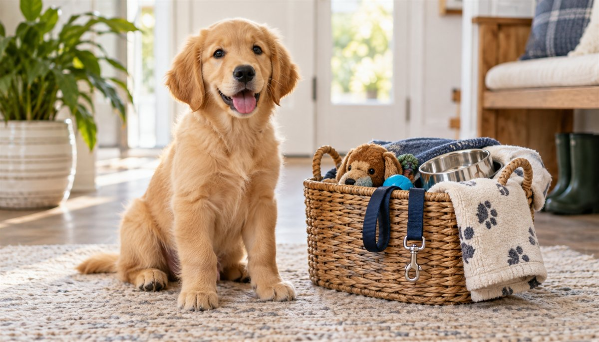

The Complete New Puppy Checklist
Researched by the CanMyPet Editorial Team · Published July 13, 2026 · Updated October 12, 2026 · Sources listed below.

Bringing a puppy home is one of life's best days — and one of its most chaotic. The secret to a smooth first week isn't luck; it's having the right things ready before those paws hit the floor. Drawing on guidance from the AKC, the AVMA and practicing vets, here's the full checklist: what to buy, how to puppy-proof, what the first 24 hours should look like, and the food rules that keep a curious puppy out of the emergency room.
Before pickup: the shopping list
🛒 The essentials
- Crate — sized so an adult dog can stand and turn around, with a divider to shrink it while your puppy is small. It's a den, not a cage: most puppies sleep better in one from night one.
- Food and water bowls — stainless steel or ceramic; they're easier to sanitize than plastic and don't hold odors.
- Puppy food — the exact brand and formula your breeder or shelter has been feeding. Buy a small bag even if you plan to switch later.
- Collar, ID tag and leash — put the tag on day one. Puppies bolt through doors faster than anyone expects.
- Chew toys — at least three or four with different textures. A teething puppy will chew; your only vote is on what.
- Bedding you don't love — the first bed usually gets chewed or has accidents. Save the fancy one for month three.
- Enzymatic cleaner — regular cleaners hide accident smells from you but not from a puppy's nose, which invites repeat visits to the same spot.
- Puppy pads or a yard plan — decide your house-training route before day one so everyone in the house is consistent.
📋 The paperwork & planning
- Vet appointment — booked for the first week, even if the puppy looks perfectly healthy.
- Vaccine and deworming records — get everything the breeder or shelter has, in writing.
- Microchip registration — if chipped, transfer the registration to your name immediately. An unregistered chip finds nobody.
- A name — short, two syllables, easy to say happily. (Stuck? Our name generator is dangerously fun.)
- A budget check — food, vet visits, insurance and gear add up faster than most first-time owners expect. Run the numbers in two minutes with our pet cost calculator.
Puppy-proofing: think at nose height
Get on the floor — literally. What a puppy can reach, a puppy will taste. Vets and the AKC flag the same repeat offenders: electrical cords (tape them down or tube them), houseplants (many common ones are toxic), trash cans (get one with a locking lid), medications and bags left on low tables, shoes, socks and kids' toys (the classic intestinal-blockage surgery), and cleaning products behind unsecured cabinet doors.
Room-by-room puppy-proofing
| Where | What puppies get into | Fix |
|---|---|---|
| Kitchen | Trash, counter-surfed snacks, low cabinets, dropped food | Locking-lid bin, child-latch on cleaner cabinets, a "nothing from the floor" rule for the whole family |
| Living room | Cords, remotes, throw-pillow stuffing, houseplants | Cord tubes or tape, a gate or pen, move plants out of reach (check any plant with the poison tool if unsure) |
| Bathroom | Medications, razors, tampons, toilet-bowl cleaner, floss | Close the door, keep pills in a closed cabinet (a dropped pill vanishes fast) |
| Bedrooms | Socks, shoes, hair ties, phone chargers, purses with gum | Closet doors shut, bags hung up high; sugar-free gum is a xylitol risk |
| Garage & yard | Antifreeze, rodent bait, slug bait, fertilizer, mulch, sticks | Store chemicals high and locked; supervise every yard trip, especially in fall when mushrooms appear |
The first 24 hours: less is more
Everyone wants to throw a welcome party. Your puppy wants the opposite. Day one should be quiet: a potty break the moment you arrive home (praise like they won a medal), a calm tour of one or two rooms — not the whole house — dinner in the crate or near it, and an early night. Expect crying the first night or two; a ticking clock, a warm (not hot) wrapped water bottle, or the crate beside your bed all help. What doesn't help is bringing the puppy into your bed "just tonight" if that's not the long-term plan — puppies learn the first rules fastest.
The first week: build the routine
🗓️ Week-one priorities
- Vet visit — a full exam, a fecal test, the vaccine schedule, and parasite prevention. Bring the breeder's records and a stool sample if you can.
- Potty routine — out after every meal, every nap, every play session, and roughly every 1–2 hours in between. A consistent door and a consistent spot speed everything up.
- Crate = good things — feed meals in the crate, toss treats in randomly, and never use it as punishment.
- Name game — say the name, reward the head turn. Ten times a day, and by Friday you have a puppy that whips around on cue.
- Alone-time practice — short, boring departures from day two or three (two minutes, then five, then ten) prevent separation issues later.
- Handling practice — touch paws, ears and mouth gently every day and pair it with treats. Your future groomer and vet will thank you.
Your first vet visit: what to bring and ask
The first visit sets the baseline for your puppy's whole life, so go in prepared. Bring the breeder's or shelter's paperwork, a fresh stool sample in a sealed bag if you can, and the name of the food your puppy is eating. Then use the appointment to ask the questions that actually matter:
🩺 Questions worth asking
- Which vaccines, and when? Ask for the full schedule in writing and what "fully protected" means for your area. Our vaccine schedule tool shows the typical timeline so you can follow along.
- What parasite prevention does my puppy need? Fleas, ticks, heartworm and intestinal worms all have age and weight cutoffs.
- When should we spay or neuter? The timing varies with breed size, so ask rather than guess.
- Is the current food right for this puppy? A vet can confirm the amount, and our feeding calculator gives you a number to compare.
- What are the emergency signs for this age? And where is the nearest 24-hour clinic? Save that address in your phone today.
The first month at a glance
| When | Focus | Win to aim for |
|---|---|---|
| Days 1–3 | Decompress. Quiet house, one or two rooms, short potty trips | Puppy eats, drinks, sleeps and pees outside at least once |
| Days 4–7 | Vet visit, routine, crate comfort, name game | A predictable eat-play-potty-nap loop |
| Weeks 2–3 | Gentle socialization, short alone-time practice, handling | Fewer accidents; settles in the crate without long crying |
| Week 4 | Puppy class (if vaccine-appropriate), basic cues, teething plan | Sit, come and "leave it" starting to click |
Don't be discouraged if your puppy runs ahead of or behind this table. It's a rough map, not a test. For an hour-by-hour version of each day, see our new puppy daily schedule, and for the body signals that tell you how your puppy is really feeling, read dog body language explained.
Teething and chewing: give them something legal
Puppies lose their baby teeth and grow adult ones over roughly the first six months, and the gums ache. Chewing is relief, not rebellion. Offer a rotation of toys with different textures, and swap them out so each feels new. A chilled carrot is a classic cheap soother (supervise and take away small pieces), and our DIY dog toys guide has safe, low-cost ideas. Be careful with cooked bones, which can splinter, and with hard chews that are tougher than a tooth should have to handle. A common vet rule of thumb is that if you can't dent it with a fingernail, it may be too hard for a puppy's teeth. If a toy shreds, take it away. And if your puppy grabs something it shouldn't, trade for a treat rather than chasing, so the item doesn't get swallowed in a panic.
🍂 Fall and Halloween: new-puppy hazards
If your puppy joins you this autumn, a few seasonal risks deserve a place on the checklist. Halloween candy is the big one: chocolate and sugar-free treats with xylitol are both dangerous, and a trick-or-treat bucket on a low table is a puppy buffet. Costumes should never restrict breathing, vision or movement, and a doorbell that rings all night can scare a puppy during the very window you're building confidence (put the puppy in a quiet room with a chew). Outdoors, fallen apples and nuts can be moldy, and wild mushrooms are impossible for most owners to identify, so keep your puppy on a leash and out of leaf piles. Rat bait and antifreeze also come out in cooler weather. On the safe side, plain pumpkin is a fine treat in small amounts. And the clocks go back on November 1, 2026, so expect your puppy's internal schedule to shift for a few days. Our toxic foods list covers the full set of holiday dangers.
Feeding a new puppy: the three rules
Rule one: don't switch food abruptly. Keep the breeder's or shelter's food for at least the first week, then transition over 7–10 days by mixing increasing amounts of the new food. A sudden switch plus moving-day stress is the number-one cause of new-puppy diarrhea. Rule two: puppies eat more often than adult dogs — typically three to four small meals a day until around six months. Rule three: treats count. Keep them under about 10% of daily calories, and stick to genuinely safe ones — a bit of carrot, a couple of blueberries, or plain cooked chicken beat anything from your plate. Not sure about a food? Check it in seconds before it leaves your hand.
Frequently asked questions
When can my puppy go outside for walks?
Full walks in public areas should wait until about 1–2 weeks after the final puppy vaccination (usually around 16 weeks). Before that, your own yard, carried outings and puppy classes that require vaccines are the safe middle ground — full isolation is no longer recommended.
How long can a puppy hold its bladder?
A rough rule: their age in months, in hours — so a two-month-old manages about two hours, at most. Overnight stretches come a little sooner because the body slows down, but plan on one nighttime potty trip in the early weeks.
Should I get pet insurance right away?
If you're going to get it, the first weeks are the best time — premiums are lowest and nothing is yet a "pre-existing condition." Compare it against the numbers from our cost calculator and decide with your eyes open. (For information only — not financial or veterinary advice.)
How big will my puppy get?
Breed, sex and current weight give a decent estimate — our puppy weight predictor does the math for you, which also helps you buy the right crate and harness sizes.
What should I do if my puppy cries in the crate at night?
Check that the basics are met (a recent potty trip, a comfortable temperature, and a safe chew), then wait out the fuss if your puppy has just been out. Rushing to let them out every time can teach that crying works. In the first nights, a young puppy may truly need a potty break, so keep it quiet and boring: out, pee, back in. Crying that is frantic or doesn't ease over several days is worth raising with your vet or a trainer.
How do I stop my puppy from biting my hands?
Mouthing is normal puppy exploration, and it peaks during teething. Offer a toy the moment teeth touch skin, praise when they take it, and pause play briefly if the bites get hard. Avoid yelling or physical corrections, which AVSAB-style positive-reinforcement guidance advises against. If the biting seems intense, nothing helps, or your puppy is guarding things, ask your vet for a trainer referral.
Can my puppy meet other dogs before the vaccines are finished?
Carefully, yes. Healthy, fully vaccinated adult dogs you know in a private space are the usual low-risk option, while dog parks, pet stores and busy sidewalks are higher risk until your vet clears them. The goal is balance: protect against disease while still giving your puppy positive early experiences during the key socialization window.
How much does it really cost to bring a puppy home?
It depends heavily on where you live, the breed and whether you adopt or buy. Our guide to what a puppy costs in the first year breaks down the main categories, and the pet cost calculator lets you run your own numbers. (For information only — not financial advice.)
Sources
- AKC — New puppy and training advice
- AVSAB — Position statements (puppy socialization)
- ASPCA — Dog care and poison control
- AAHA — Canine life stage and vaccine guidelines
- AVMA — Pet owner resources
This guide is for information only — not veterinary advice. Always consult your vet about your puppy's specific health, feeding and vaccination plan. Poison-line consultation fees may apply.